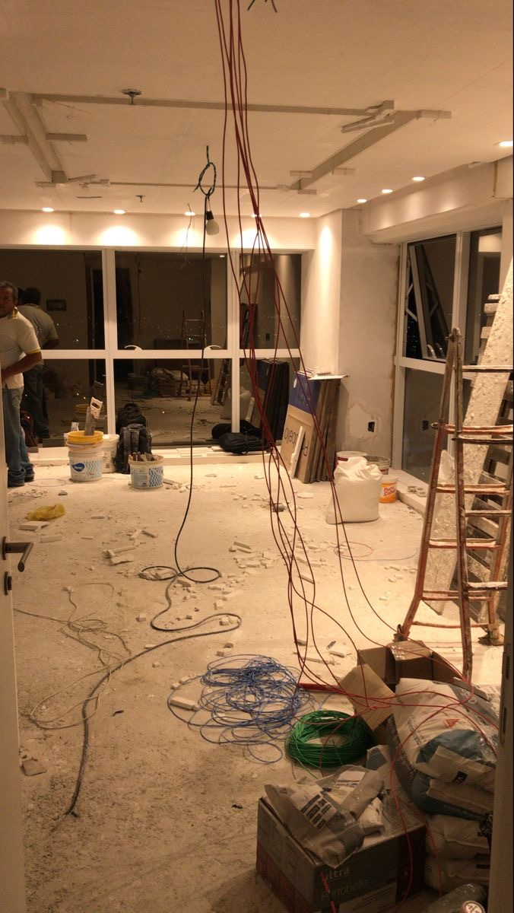

01ELECTRICAL
Electrical Installation
Practical electrical installation activities require an understanding of circuits, distribution systems, cables, protection devices, lighting systems and electrical equipment.
- Cable installation and routing
- Distribution board installation
- Lighting circuits
- Socket and accessory installation
- Electrical testing and inspection